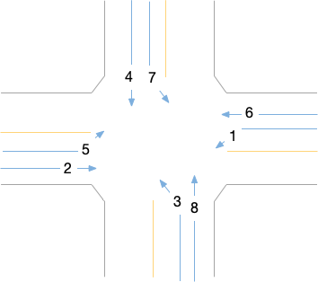
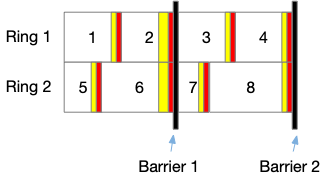
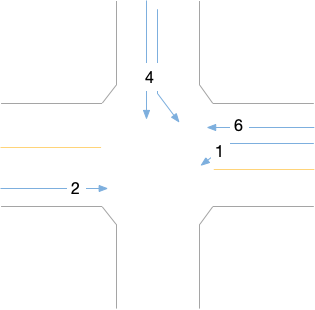

Traffic Lights with NEMA Phases
The controller modules in Traffic Lights use a stage-based control structure. A phase is defined as a stage of all allowed movements at a time instance. However, traffic signal controllers used in North America widely use National Electrical Manufacturers Association (NEMA) phase definition. A NEMA phase is defined by a certain flow movement at an intersection. At one time, more than one NEMA phase could happen together as long as they do not conflict with each other.

Example: The movements at an intersection are numbered. The right turns usually go with the associated through movements. The left turn movements are usually odd numbers and the through and right turn movements are usually labeled with even number. Phase 2 and 6 are usually on the main street. An intersection does not need to have all 8 phases.
SUMO now includes a controller module that is compatible with NEMA phases. The NEMA-phase controller can perform actuated or coordinated actuated control. This module is developed by Tianxin Li and Qichao Wang at the National Renewable Energy Laboratory and funded by U.S. Department of Energy Vehicle Technology Office.
NEMA Phases#
We can visualize the NEMA phases and timings in Ring-and-Barrier structured NEMA diagrams. For one controller, only one phase from a ring can be activated at a time. Phases from different rings could be activated together as long as they are not from the different sides of a barrier. When a controller is operated in fixed-time control mode, we can model the NEMA phase timing as a corresponding stage-based control timing without any issues. When introducing actuation into the signal control, a Ring-and-Barrier structured traffic signal controller can be more flexible than stage-based controller by allowing different possible phase combinations.

Example: In the above NEMA diagram, we could see phase 1+5, 1+6, 2+6, 3+7, 3+8 and 4+8. However, when the traffic on phase 1 is very low and phase 1 could gap out early. In that case, we will not see phase 1+6 but additionally see phase 2+5.
Defining New NEMA phase timings#
You can load new definitions for NEMA-phase traffic controller as a part of an additional-file. The signal timing could be updated in simulation through TraCI functions. A definition of a traffic light program for a four-leg eight-phase intersection within an additional-file looks like this:
<add>
<tlLogic id="2881" offset="10" programID="NEMA" type="NEMA">
<param key="detector-length" value="20"/>
<param key="detector-length-leftTurnLane" value="10"/>
<param key="total-cycle-length" value="130"/>
<param key="ring1" value="1,2,3,4"/>
<param key="ring2" value="5,6,7,8"/>
<param key="barrierPhases" value="2,6"/>
<param key="coordinate-mode" value="true"/>
<param key="barrier2Phases" value="4,8"/>
<param key="minRecall" value="2,6"/>
<param key="maxRecall" value=""/>
<param key="whetherOutputState" value="true"/>
<param key="fixForceOff" value="false"/>
<phase duration="99" minDur="5" maxDur="25" vehext="2" yellow="3" red="2" name="3" state="rrrrrrrrGrrr"/>
<phase duration="99" minDur="5" maxDur="25" vehext="2" yellow="3" red="2" name="7" state="rrGrrrrrrrrr"/>
<phase duration="99" minDur="5" maxDur="30" vehext="2" yellow="3" red="2" name="4" state="GGrrrrrrrrrr"/>
<phase duration="99" minDur="5" maxDur="30" vehext="2" yellow="3" red="2" name="8" state="rrrrrrGGrrrr"/>
<phase duration="99" minDur="5" maxDur="20" vehext="2" yellow="3" red="2" name="1" state="rrrrrGrrrrrr"/>
<phase duration="99" minDur="5" maxDur="20" vehext="2" yellow="3" red="2" name="5" state="rrrrrrrrrrrG"/>
<phase duration="99" minDur="5" maxDur="35" vehext="2" yellow="3" red="2" name="2" state="rrrrrrrrrGGr"/>
<phase duration="99" minDur="5" maxDur="35" vehext="2" yellow="3" red="2" name="6" state="rrrGGrrrrrrr"/>
</tlLogic>
</add>
For an intersection at a ramp, the traffic light program configuration could look like this:
<add>
<tlLogic id="2881" offset="10" programID="NEMA" type="NEMA">
<param key="detector-length" value="20"/>
<param key="detector-length-leftTurnLane" value="10"/>
<param key="total-cycle-length" value="120"/>
<param key="ring1" value="1,2,0,4"/>
<param key="ring2" value="0,6,0,4"/>
<param key="barrierPhases" value="2,6"/>
<param key="coordinate-mode" value="true"/>
<param key="barrier2Phases" value="4,4"/>
<param key="minRecall" value="2,6"/>
<param key="maxRecall" value=""/>
<param key="whetherOutputState" value="true"/>
<param key="fixForceOff" value="false"/>
<phase duration="99" minDur="6" maxDur="16" vehext="2" yellow="4" red="1" name="1" state="srrrrrrGGrrr"/>
<phase duration="99" minDur="10" maxDur="67" vehext="2" yellow="4" red="1" name="2" state="srrrrrrrrGGG"/>
<phase duration="99" minDur="10" maxDur="22" vehext="2" yellow="3.5" red="1.5" name="4" state="GGGGGrrrrrrr"/>
<phase duration="99" minDur="10" maxDur="88" vehext="2" yellow="4" red="1" name="6" state="srrrrGGrrrrr"/>
</tlLogic>
</add>

Example: A ramp intersection which only has phases 1, 2, 4, and 6. Phase 4 controls the traffic from the off ramp.
<tlLogic> Attributes#
The following attributes/elements are used within the tlLogic element:
| Attribute Name | Value Type | Description |
|---|---|---|
| id | id (string) | The id of the traffic light. This must be an existing traffic light id in the .net.xml file. Typically the id for a traffic light is identical with the junction id. The name may be obtained by right-clicking the red/green bars in front of a controlled intersection. |
| type | NEMA (string) | This value should be kept as NEMA to activate the NEMA-phase controller module |
| programID | id (string) | The id of the traffic light program. |
| offset | int | The offset value in seconds. Default to 0. Only effective when the controller is in coordinated mode. The reference to the offset is dependent on the controller cabinent type, which is configured via the cabinentType parameter below. |
<param> Attributes#
The following parameters are used to set the NEMA diagram and controller behavior:
| Parameter Key | Value Type | Description |
|---|---|---|
| detector-length | float | The length (in meters) of the stop bar detectors for non-left-turn lane. Note that the detectors can be replaced by customized detectors (see Custom Detectors). This parameter is for quick generation of a stop bar detector setting. |
| detector-length-leftTurnLane | float | The length (in meters) of the stop bar detectors for left-turn lane. Note that the detectors can be replaced by customized detectors (see Custom Detectors). This parameter is for quick generation of a stop bar detector setting. We have this parameter here because typically the stop bar detectors on the left-turn lanes have different lengths from the through lanes. |
| total-cycle-length | int | The cycle length in seconds. |
| ring1 | string | The phase numbers in ring 1 separated by comma (','). Fill 0 if a phase does not exist. |
| ring2 | string | The phase numbers in ring 2 separated by comma (','). Fill 0 if a phase does not exist. Repeat the ring 1 phases of the side of barrier if that side of barrier does not have any phases. |
| barrierPhases | string | One set of phases, separated by comma (','), one per ring, on one side of the barrier. The phase that ends each ring's side at the barrier is taken from the ring order (see Leading and Lagging Left Turns); this parameter chooses the default phase entered after a barrier crossing. Usually phase 4 and 8, i.e., "4,8". Exactly one phase per ring (two values) must be given; if both rings end at the same phase (e.g. for a single-ring controller), repeat it, i.e., "4,4". |
| coordinate-mode | bool (true or false) | Default to false. True if the controller is in coordinated mode. |
| barrier2Phases | string | One set of phases, separated by comma (','), one per ring, on the other side of the barrier: the default phases entered after a crossing to that side. If in coordinated mode, this set of phases are the coordinated phases. Usually phase 2 and 6, i.e., "2,6". Exactly one phase per ring (two values) must be given; if both rings end at the same phase, repeat it, i.e., "2,2". May also be given as coordinatePhases. |
| minRecall | string | One set of phases, separated by comma (','), that will get activated no matter if the corresponding detectors will be activated or not. The duration of the phase activation will be between minDur and maxDur of the phase. E.g., "2,6". The value will be default to "1,2,3,4,5,6,7,8" if not set (all the existing phases will be called). |
| maxRecall | string | One set of phases, separated by comma (','), that will get activated no matter if the corresponding detectors will be activated or not. The duration of the phase activation will be the maxDur of the phase. If you set all the phases to have maxRecall, the controller will behave as a fixed time controller with the green times being the maxDur of the phases. The value will be default to empty ("") if not set. |
| reservicePhases | string | Coordinated mode only. One set of coordinated phases, separated by comma (','), that are served again in the same cycle when their lagging phase gaps out (see Leading and Lagging Left Turns). A listed phase that is not a coordinated phase followed by a lagging phase is ignored with a warning. The value will be default to empty ("") if not set. |
| fixForceOff | bool (true or false) | If true, the controller will be in fixed force-off mode. This permits non-coordinated phases to use the unused time of previous phases. If false, the controller will be in floating force-off mode. default false |
| whetherOutputState | bool (true or false) | Whether record the signal phase change events. This could be used for generating Automated Traffic Signal Performance Measures (ATSPM). The value will be default to false if not set. |
| show-detectors | bool (true or false) | It controls whether generated detectors will be visible or hidden in sumo-gui. The default for all traffic lights can be set with option --tls.actuated.show-detectors. It is also possible to toggle this value from within the GUI by right-clicking on a traffic light. |
| controllerType | string (TS2 or Type 170) | It controls the type of controller used. NEMA TS2 controllers reference the coordinated offset to the beginning of the 1st coordinated phase. Type 170 controllers reference the coordinated offset to the beginning of yellow on the coordinated phase. TS2 offset has been validated against software-in-the-loop Econolite controllers. default TS2. |
| latchingDetectors | string | Passing a string of phases (like "1,2,3,4") will cause the detector in those phases to remain on until the phase has been served, regardless of whether the vehicle left the detection zone or not. default "". |
| crossPhaseSwitching:X | string | X is a phase number. For example, key="crossPhaseSwitching:2" value="5" will cause phase 5 detector to report to phase 2 while phase 2 is active. Default is no cross phase switching |
Custom Detectors#
By default, a lane-area (E2) detector ending at the stop line is generated for every incoming lane, with length detector-length (or detector-length-leftTurnLane for lanes whose only connection is a left turn; both default to 20 m).
To use a custom detector, add <param key="LANE_ID" value="DETECTOR_ID"/> where LANE_ID is an incoming lane of the traffic light and DETECTOR_ID is a user-defined laneAreaDetector (it may lie on another lane). Unlike for actuated traffic lights, inductionLoops are not supported for NEMA and cause an error. Keys that are not incoming lanes of the traffic light are ignored. When using several programs, repeat the parameters in each program.
<phase> Attributes#
Each phase is defined using the following attributes:
| Attribute Name | Value Type | Description |
|---|---|---|
| duration | time (int) | This attribute is default to 99 and does not affect the control. The duration of the phase will change dynamically according to the traffic actuation and constrained by minDur and maxDur. |
| minDur | time (double) | The minimum green of the phase. |
| maxDur | time (double) | The maximum green of the phase. In coordinated mode, it's the split minus the yellow and all red time of the phase. |
| vehExt | time (double) | Vehicle extension in seconds of the actuated phase. |
| yellow | time (double) | The yellow time of the phase. |
| red | time (double) | Red clearance time of the phase. |
| name | int | The NEMA phase number. |
| state | string | The state attribute defines the allowable movements associated with the phase. This is best set from netedit. You can find more information from Traffic Lights -> Signal state definitions |
Leading and Lagging Left Turns#
Each ring has four slots: slots 1 and 2 are one side of the barrier, slots 3 and 4 the other. The phase that ends a ring's side at the barrier is the last non-zero phase of that side in the ring order. A left turn placed before the through phase of its ring leads; a left turn placed after it lags. In coordinated mode, a coordinated phase (barrier2Phases) does not need to be last on its side, so every lead/lag arrangement is set by the ring order alone:
| Arrangement | ring1 | ring2 | barrierPhases | barrier2Phases |
|---|---|---|---|---|
| lead-lead | 1,2,3,4 | 5,6,7,8 | 4,8 | 2,6 |
| lead-lag (phase 1 lags) | 2,1,3,4 | 5,6,7,8 | 4,8 | 2,6 |
| lag-lead (phase 5 lags) | 1,2,3,4 | 6,5,7,8 | 4,8 | 2,6 |
| lag-lag | 2,1,3,4 | 6,5,7,8 | 4,8 | 2,6 |
When a coordinated phase is followed by a lagging phase:
- If the lagging phase is called, the coordinated phase ends at its force-off and the lagging phase runs next to the coordinated phase of the other ring, ending no later than its own force-off. The lagging phase is served only between the coordinated phase's force-off and its own force-off, and only if its minDur plus the coordinated phase's yellow and red still fit before its force-off. A call that does not fit, or that comes while the coordinated phase is green outside that window (e.g. when the simulation begins elsewhere in the cycle), is served in the next cycle.
- If the lagging phase is not called, the coordinated phase keeps its green until the barrier and so uses the lagging phase's split. This is not green rest.
- If the lagging phase gaps out before the other side of the barrier is called, it keeps its green instead of returning to the coordinated phase, which is past its force-off. It crosses the barrier when the other side is called in either ring and the call still fits (see below); a later call waits for the next cycle. Otherwise the lagging phase ends so that its yellow and red end at the coordinated phase's next start. Meanwhile the coordinated phase of its ring stays red, so with no demand on the other side of the barrier the lagging phase can stay green for the rest of the cycle.
- If the coordinated phase is listed in reservicePhases, a lagging phase that gaps out with no call on the other side of the barrier (in either ring) goes back to it instead, and the coordinated phase is served again in the same cycle. Its lagging phase is not served a second time in that cycle. The coordinated phase times only its minDur then, so a later call on the other side of the barrier can still cross after that minDur, not before the barrier, and if the call still fits. A call that arrives just after the coordinated phase is served again therefore starts up to that minDur later than it would after a lagging phase that keeps its green. If the coordinated phase is still green at its next start, it is timed as usual from there.
- Both rings cross the barrier at the same time, and each ring crosses only if the other side's minDur plus the yellow and red of its own phase still fit before that side's force-off. A call that does not fit for both rings waits for the next cycle, so the coordinated phases start on time.
- If a lagging phase runs to its force-off and its yellow plus red is shorter than that of the coordinated phase in the other ring, the other ring's coordinated phase stays green until the lagging phase ends, and the next side of the barrier starts after the longer clearance. With yellow + red of 4 s on the lagging phase and 7 s on the coordinated phase, the side street starts 3 s later than the splits alone would give. The same holds when the lagging phase is not called: if the yellow plus red of its coordinated phase is shorter than that of the other ring's coordinated phase, the barrier is crossed when its coordinated phase ends and the next side of the barrier starts late by the difference.
- In a lead-lag or lag-lead plan, the coordinated phases do not end together. The coordinated phase in the ring with the leading left turn keeps its green until its own force-off, and it goes back to its leading phase only after that and only while the other side of the barrier is not called; otherwise the leading phase is served after the other side. A coordinated phase always times at least its minDur.
- In a lag-lag plan where both lagging phases are called and both gap out while the other side of the barrier is called, the barrier is crossed when they end, so the other side of the barrier starts early.
The barrier roles come from the ring order in both modes. A warning is written once per controller if barrierPhases names a phase that is not the last on its side (in either mode), or if barrier2Phases does outside coordinated mode. In coordinated mode a coordinated phase followed by a lagging phase is not warned about. These parameters still choose the default phase entered after a barrier crossing.
For controllerType TS2, the cycle zero is the start of the first coordinated phase in the cycle: the coordinated starts are wrapped into the cycle before the earliest one is taken (in the lead-lag row of the table above, the zero is the start of phase 2).
Change the timings during the simulation#
Certain signal timing parameters can be updated during the simulation through TraCI.
- traci.trafficlight.setNemaOffset(tlsID, offset): The offset will be adjusted by shortening or extending the green time of the coordinated phase so that the end of the coordinated phase will match the offset. It is recommended to change the offset gradually to mimic a transition time.
- traci.trafficlight.setNemaMaxGreens(tlsID, maxGreens): sets maximum green times for each NEMA phase by giving 8 numbers. Time 0 must be used for each phase that does not exists
- traci.trafficlight.setNemaSplits(tlsID, splits): works like setNemaMaxGreens but subtracts the red- and yellow-times before setting maximum green time for each phase
- traci.trafficlight.setNemaCycleLength(tlsID, cycleLength): the cycle length may change when you update the splits/max green. You need to set the new cycle length to make the new timing work without problems.
The values are given as NEMA.splits / NEMA.maxGreens (8 space-separated numbers for phases 1–8; a value ≤ 0 leaves that phase's stored value unchanged), NEMA.cycleLength and NEMA.offset (seconds), which can also be set with traci.trafficlight.setParameter. These calls act on the currently active program. Each call only stores the new value. All stored values are applied together when a coordinated phase (barrier2Phases) of either ring next turns green, and the force-off points are then recalculated, so the phases after it in the same cycle already use the new timing. The timing checks done at load time are not repeated. The offset is measured from simulation time 0. Only NEMA.phaseCall (also via getNemaPhaseCalls) can be read back.
The parameter coordinate-mode is only read when the program is loaded; changing it with setParameter has no effect. One way to switch between coordinated and free operation is to define two programs and switch with traci.trafficlight.setProgram. As for other traffic light types, the switch is immediate (no yellow), and the other program has kept running while inactive, so it continues from its own current phase.
Configuration Errors#
The following errors may be raised:
- the phases before barrier X from both rings do not add up: EXPLANATION FORTHCOMING
- Ring X does not add to cycle length: EXPLANATION FORTHCOMING
To simulate misconfigured controllers, both errors may be ignored by setting <param key="ignore-errors" value="true"/>.
Publication#
The implementation and validation of the controller was described in Schrader, M.; Wang, Q.; Bittle, J. Extension and Validation of NEMA-Style Dual-Ring Controller in SUMO. SUMO Conf Proc 2022, 3, 1-13.